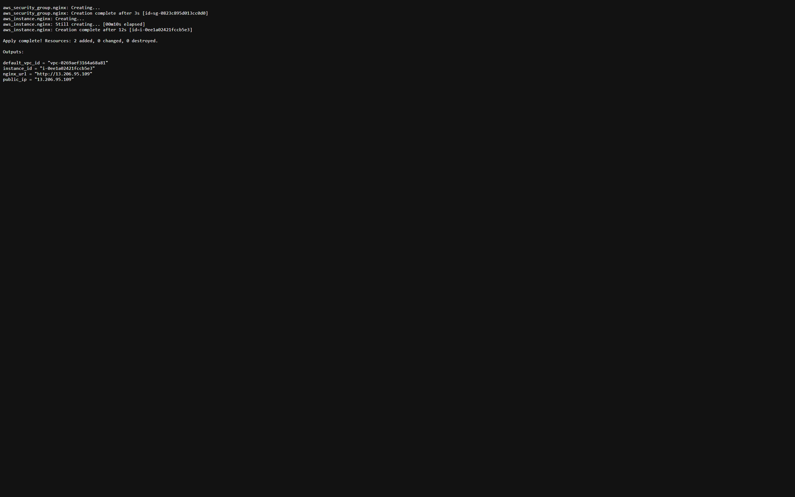
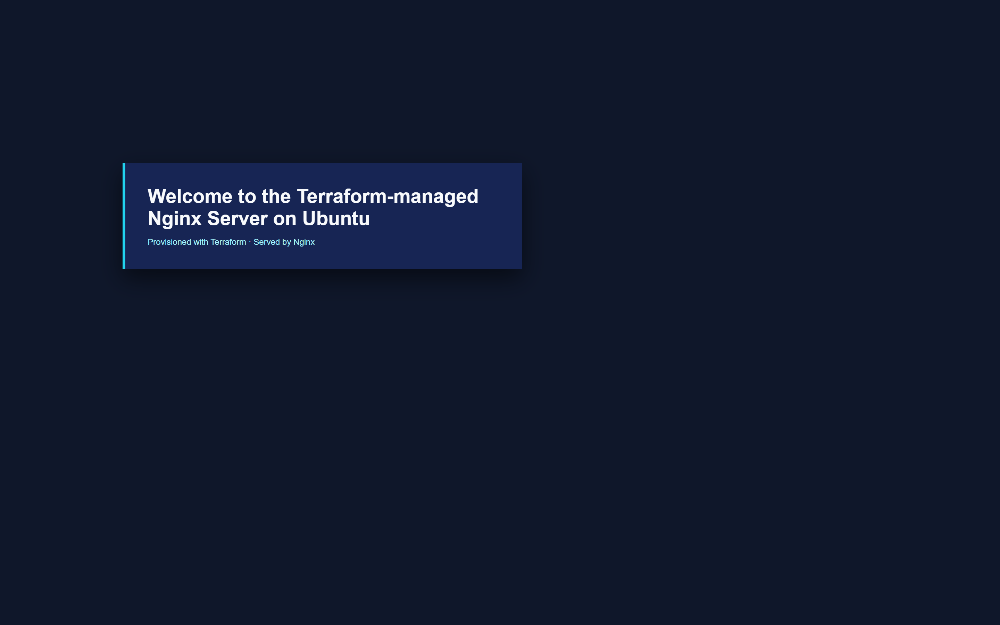
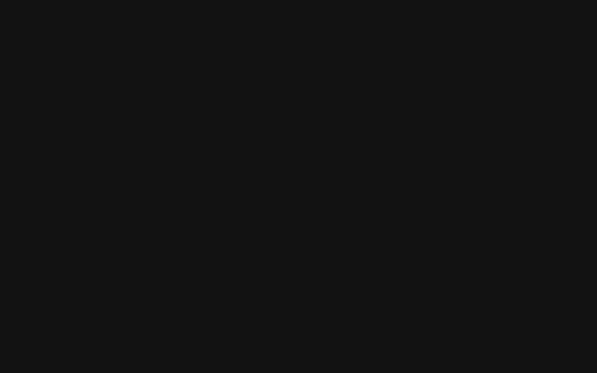
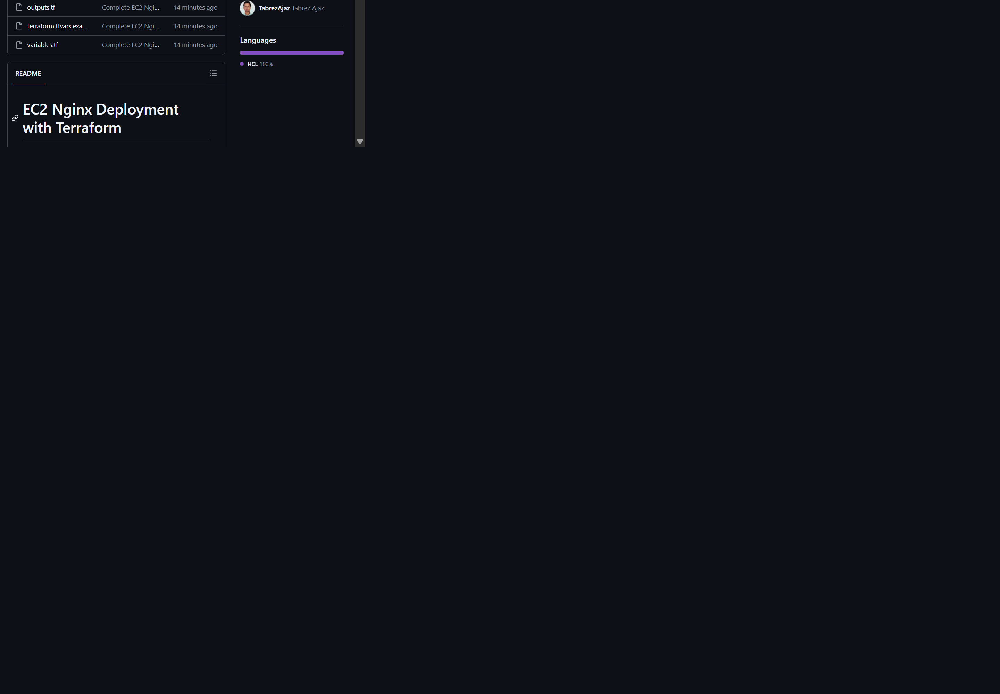

EC2 Nginx Deployment with Terraform
A minimal, secure and reproducible Ubuntu 20.04 Nginx deployment in the existing AWS default VPC.
Abstract
This report documents the complete implementation of the assignment EC2 Nginx Deployment with Terraform. Terraform was used to query the existing AWS default VPC and default subnet, create one security group, and launch one official Canonical Ubuntu 20.04 LTS t2.micro instance. EC2 user_data installed Nginx and replaced its default page with the exact required welcome message.
The server was deployed live, its public IP was produced through Terraform output, and the custom page was verified over HTTP. Genuine evidence was captured before terraform destroy removed both managed resources. The final Terraform state is empty and the EC2 instance is confirmed terminated.
1. Requirement Traceability
| Requirement | Implementation | Status |
|---|---|---|
| AWS provider and region | AWS provider 5.x with configurable aws_region and profile | Complete |
| Ubuntu 20.04 LTS | Latest official Canonical Focal AMI data lookup | Verified |
| t2.micro in default VPC | Exact type enforced by variable validation; existing VPC/subnet data sources | Verified |
| HTTP 80 and SSH 22 | Public HTTP; SSH restricted to administrator /32 | Complete |
| Install Nginx using user_data | APT update/install, custom HTML write, enable and restart service | Verified |
| Required page content | Exact message returned from the public EC2 address | Verified |
| Output public IP | public_ip and nginx_url outputs | Complete |
| Proper teardown | Terraform destroyed EC2 and security group; state empty | Verified |
| README documentation | Run steps, resources, security, evidence and teardown included | Complete |
2. Architecture and Design
HTTP :80
Default Subnet
t2.micro EC2
Custom HTML
The implementation deliberately reuses the account's existing default VPC and default subnet. Terraform creates no VPC, subnet, route table, Internet Gateway or NAT Gateway. This keeps the solution aligned with the task, simple to review and inexpensive to execute.
Managed Resources
| Resource | Purpose | Key Configuration |
|---|---|---|
aws_security_group.nginx | Network boundary | HTTP 80 public; SSH 22 from administrator CIDR; outbound package access |
aws_instance.nginx | Nginx host | Ubuntu 20.04, t2.micro, public IPv4, encrypted 8 GiB gp3, IMDSv2 |
Existing Resources Queried
aws_vpc.default, aws_subnet.default_1a, and aws_ami.ubuntu_2004 are data sources only and are never created or destroyed.
3. Terraform Implementation
AMI Selection
The configuration requests the latest x86_64 official Canonical image matching ubuntu-focal-20.04-amd64-server-*. The verified deployment resolved AMI ami-06cc5ebfb8571a147.
Security Group
HTTP is publicly available as required. SSH is safer than the minimum requirement because it is restricted to the administrator's current public address instead of exposing port 22 globally.
User Data
#!/bin/bash set -e apt-get update apt-get install -y nginx cat > /var/www/html/index.html <<'HTML' ... Welcome to the Terraform-managed Nginx Server on Ubuntu ... HTML systemctl enable nginx systemctl restart nginx
Outputs
The configuration exposes public_ip, nginx_url, instance_id, and default_vpc_id after apply.
4. Terraform CLI Execution
Only the required Terraform CLI workflow was used:
terraform init terraform plan -out=assignment.tfplan terraform apply assignment.tfplan terraform output -raw public_ip terraform destroy -auto-approve
The reviewed plan created only the EC2 instance and security group. The initial default-subnet selection resolved to ap-south-1c, where legacy t2.micro capacity is unsupported. The configuration was corrected to select the existing default subnet in ap-south-1a; no subnet was created.

5. Public Nginx Verification
The public URL http://13.206.95.109 returned HTTP 200 and the exact required custom content. The visual design below was written entirely by EC2 user data to /var/www/html/index.html.

6. Security and Best Practices
- All resources carry Project, ManagedBy, Owner and Name tags.
- SSH is restricted to a single administrator CIDR.
- EC2 Instance Metadata Service requires IMDSv2 tokens.
- The encrypted gp3 root volume is deleted with the instance.
- Terraform state, saved plans, real variables, PEM files and crash logs are Git-ignored.
create_before_destroyavoids security-group naming conflicts during replacement.- Variable validation prevents accidental use of any instance type other than the required
t2.micro.
7. Teardown Verification
terraform destroy removed the instance, its encrypted root volume and the assignment security group. The existing default VPC and subnet were data sources and therefore remained untouched.

| Check | Observed Result |
|---|---|
| Terraform state | Empty |
EC2 instance i-0ee1a02421fccb5e3 | terminated |
| Destroy summary | Destroy complete! Resources: 2 destroyed. |
8. Repository and Submission
The public repository contains the Terraform source, provider lock file, example variables, README, original assignment paper and genuine evidence screenshots.

| Deliverable | Location |
|---|---|
| GitHub repository | github.com/TabrezAjaz/Terraform-Nginx-EC2-Ubuntu |
| Terraform configuration | main.tf, variables.tf, outputs.tf |
| Execution documentation | README.md |
| Evidence | docs/screenshots/ |
| Portal link file | SUBMISSION_LINK.txt |
9. Conclusion
The assignment was completed with a minimal Terraform design that creates only the two required managed resources. An official Ubuntu 20.04 t2.micro instance was launched in the existing default VPC, Nginx was installed and customized automatically, and the required page was verified through the Terraform public-IP output. Finally, Terraform destroyed all created resources and left an empty state.